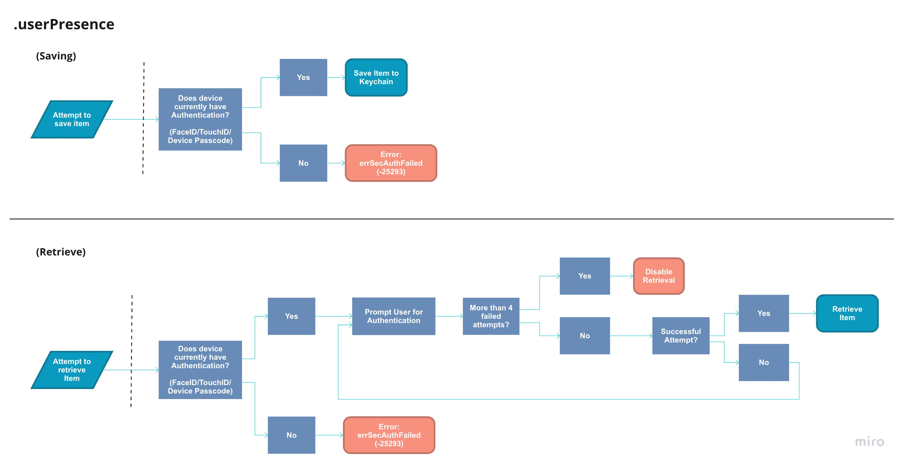
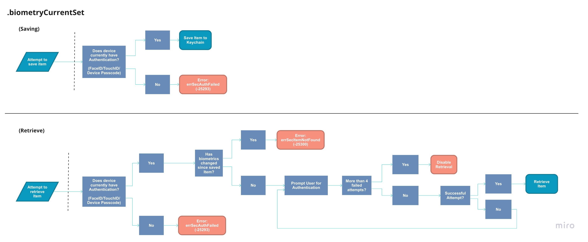

Understanding Keychain#
This is a living document, so expect updates in the future. 📖
Introduction#
Most applications that work with Keychain Services, use it to store sensitive information such as user credentials and tokens. When working with Keychain, you typically would find yourself using a framework like KeychainAccess, Locksmith, or keychain-swift. Even tutorials from some of the most reputable online resources encourage the use of these frameworks. Even Apple provides a wrapper around keychain.
Now why is this article even necessary when the user can just use the Cely framework?
We feel Cely should be considered as an end solution for 99% of codebases that store credentials securely and have a login system. It's the remaining 1% of codebases that require a small tweak that this article is targeting. We've seen many frameworks change their API only to accommodate a small fraction of their userbase. Given the remaining 1%, each requiring different solutions, trying to solve everyone's problem is not the approach the Cely team wants to take moving forward. Instead, we'd like to enable developers to build out this remaining 1% themselves.
By the end of this article — we hope the reader should have a firm grasp of Keychain Services and what all that entails. We will cover Keychain Services in depth, going over simple CRUD operations, ACL, biometrics, etc.
Keychain Anatomy#
Note
Keychain Services expects Core Foundation objects, hence the
CFprefix on some of the properties/attributes, such asCFDictionary,CFData, etc. Don't be intimidated, you can still use theDatatype since Apple has bridges for these types. Read Tool-Free Bridging for more information.
The Keychain is an encrypted database stored on disk consistenting of Keychain Items. A Keychain Item is made up of attributes and the data you wish to encrypt.
kSecClass#
The kSecClass attribute describes to Keychain what classification an item is, and determines what other attributes can be stored with your item.
For example, if your application was storing a certificate, you would use the kSecClassCertificate class attribute. This attribute tells Keychain what other attributes can be set on your item, such as kSecAttrIssuer and kSecAttrPublicKeyHash. Trying to set an attribute that doesn't exist on the kSecClass attribute will result in OSStatus code errSecNoSuchAttr: -25303. Also, not setting the kSecClass key in your Keychain Item will result in OSStatus error errSecParam: -50.
Below are the available options for the kSecClass key:
- kSecClassGenericPassword
- kSecClassInternetPassword
- kSecClassCertificate
- kSecClassKey
- kSecClassIdentity
If you want to see all available attributes regardless of class, here is the list.
Keychain Operations#
In the following sections we will explain how to perform CRUD operations to Keychain items and what are some common gotchas.
Create Item#
Use the SecItemAdd(_:) function to add an item to Keychain. Below is an example on how to add an item to Keychain.
@IBAction func AddButtonClicked(_ sender: Any) {
let item: [CFString: Any] = [
kSecClass: kSecClassInternetPassword,
kSecAttrAccount: "username",
kSecAttrServer: "example.com",
kSecValueData: "some-password".data(using: String.Encoding.utf8)!
]
let status = SecItemAdd(item as CFDictionary, nil)
guard status == errSecSuccess else {
print("status:", status) // status: 0
return
}
print("successfully saved")
}
This is a goldilock example, meaning everything is setup correctly and no error's occurred, this of course will not happen everytime. In the case AddButtonClicked(_:) executes twice, you'd expect that Keychain will add another item into its database with duplicate data, right? Wrong! This will result in error errSecDuplicateItem: -25299. Please read errSecDuplicateItem documentation to get a set of attributes (primary keys) that must be unique.
In the following example, we are trying to store two kSecClassInternetPassword items in the Keychain. Since the set of kSecAttrAccount and kSecAttrServer are not unique between the items, the item2 will result in the errSecDuplicateItem error.
let item1: [CFString: Any] = [
kSecClass: kSecClassInternetPassword,
kSecAttrAccount: account,
kSecAttrServer: "example.com",
kSecValueData: passwordData
]
let status = SecItemAdd(item1 as CFDictionary, nil)
guard status == errSecSuccess else {
print("status:", status) // status: 0
return
}
// ----
let item2: [CFString: Any] = [
kSecClass: kSecClassInternetPassword,
kSecAttrAccount: account,
kSecAttrServer: "example.com",
kSecValueData: passwordData,
kSecAttrLabel: "some new label attribute"
]
let status2 = SecItemAdd(item2 as CFDictionary, nil)
guard status2 == errSecSuccess else {
print("status:", status2) // status: -25299
return
}
Querying Item(s)#
Note from Apple documentation:
By default, your app can freely retrieve its own keychain items but not those of other apps. However, keychain services does provide mechanisms for broadening or narrowing that accessibility, for example, using the
kSecAttrAccessGroupattribute.
Use the SecItemCopyMatching(_:) function to query item(s) from Keychain. With the example below, take note that we are only searching across kSecAttrServer and not including kSecAttrAccount.
@IBAction func QueryClicked(_ sender: Any) {
let query: [CFString: Any] = [
kSecClass: kSecClassInternetPassword,
kSecAttrServer: "example.com",
kSecReturnAttributes: true,
kSecReturnData: true
]
var someItem: CFTypeRef?
let status = SecItemCopyMatching(query as CFDictionary, &someItem)
guard status == errSecSuccess else {
print("status:", status)
return
}
guard let item = someItem else {
print("no Item") // errSecItemNotFound: -25300
return
}
print("result: \(item)")
}
In the case where multiple accounts have the same kSecAttrServer set, we'd expect to see an array of items returned. But with the above example, only one item was returned. This is because by default SecItemCopyMatching(_:) only returns the first match found. If you would like to return all items that match the provided query, you must set kSecMatchLimit in the query.
let query: [CFString: Any] = [
kSecClass: kSecClassInternetPassword,
kSecMatchLimit: kSecMatchLimitAll, // <--
// ...
]
The two most important attributes when retrieving an item are:
kSecReturnAttributes: must be set totruein order to retrieve item's attributeskSecReturnData: must be set to true in order to retrieve secret data.
Even setting kSecReturnData: true and excluding kSecReturnAttributes, or setting it to false, will result in item returning as nil.
let query: [CFString: Any] = [
//...
kSecReturnAttributes: false,
kSecReturnData: true
]
// ...
// prints: no Item
Updating Item#
Use the SecItemUpdate(_:) function to update an item in Keychain. It is important to note that you should provide as many attributes to help Keychain filter what item to update. In the case where a user has multiple accounts stored in Keychain and you simply queried for kSecAttrServer and kSecClass, all Keychain Items that match that query will be updated.
@IBAction func updateClicked(_ sender: Any) {
let query: [CFString: Any] = [
kSecClass: kSecClassInternetPassword,
kSecAttrServer: "example.com",
kSecAttrAccount: "username"
]
let newAttributes: [CFString: Any] = [
kSecValueData: "new-password".data(using: String.Encoding.utf8)!
]
let status = SecItemUpdate(query as CFDictionary, newAttributes as CFDictionary)
guard status == errSecSuccess else {
print("status:", status)
return
}
print("successfully updated")
}
Deleting Item#
Use the SecItemDelete(_:) function to delete an item in Keychain. Just like when updating an item, you should provide as many attributes to help Keychain filter what item to delete. In the case where a user has multiple accounts stored in Keychain and you simply queried for kSecAttrServer and kSecClass, all Keychain Items that match that query will be deleted.
@IBAction func deleteClicked(_ sender: Any) {
let query: [CFString: Any] = [
kSecClass: kSecClassInternetPassword,
kSecAttrAccount: "username",
kSecAttrServer: "example.com"
]
let status = SecItemDelete(query as CFDictionary)
guard status == errSecSuccess else {
print("status:", status)
return
}
print("successfully deleted")
}
Accessibility#
In this section we will go over how to configure when your application has access to your Keychain items. For this, we set the kSecAttrAccessible attribute. By default, this attribute it set to kSecAttrAccessibleWhenUnlocked, but values for this attribute fall within two categories:
Items that can be restored from a backup of another device.
Items that cannot be restored from a backup of another device.
- kSecAttrAccessibleWhenUnlockedThisDeviceOnly
- kSecAttrAccessibleAfterFirstUnlockThisDeviceOnly
- kSecAttrAccessibleWhenPasscodeSetThisDeviceOnly
If you are using kSecAttrAccessibleWhenPasscodeSetThisDeviceOnly – be prepared to encounter the errSecNotAvailable: -25291 error if the user does not have a passcode set. Here is where you can prompt the user that: "They must set a device passcode in order to continue."
Example
let query: [CFString: Any] = [
kSecAttrAccessible: kSecAttrAccessibleWhenUnlocked,
// ...
]
Notes#
You must also provide the item's encrypted data, kSecValueData, anytime you wish to update the kSecAttrAccessible attribute in the future.
Add FaceID/TouchID#
Access Control#
In order to add biometrics such as FaceID or TouchID to a Keychain item, you must create a SecAccessControl object using the SecAccessControlCreateWithFlags(_:) function and set it the kSecAttrAccessControl attribute.
example
var error: Unmanaged<CFError>? = nil
let accessControlObject = SecAccessControlCreateWithFlags(nil,
kSecAttrAccessibleWhenUnlocked,
.userPresence,
&error)
let item: [CFString: Any] = [
kSecClass: kSecClassInternetPassword,
kSecAttrAccessControl: accessControlObject
// ...
]
// ...
Flags#
In this section we will be going over some of the flags you can set and what errors you may encounter. In you want to see the entire list of flags, please checkout SecAccessControlCreateFlag for more information.
Flags we will go over:
.userPresence- FaceID/TouchID/Device Passcode..devicePasscode- Device Passcode only..biometryAny- FaceID/TouchID only (allows for biometrics changes)..biometryCurrentSet- FaceID/TouchID only (invalidates item when biometrics change)..applicationPassword- Application Specific password.
NSFaceIDUsageDescription#
When using .userPresence, if NSFaceIDUsageDescription is not set in your plist, your application will revert to prompting the user for the Device Passcode. But when using .biometryAny or .biometryCurrentSet, failing to set NSFaceIDUsageDescription will result in your application crashing with the following error:
ERROR: This app has crashed because it attempted to access privacy-sensitive
data without a usage description. The app's Info.plist must contain
an NSFaceIDUsageDescription key with a string value explaining to
the user how the app uses this data.
.userPresence#
.userPresence is more than likely the flag you would be using in your application. Other flags such as .devicePasscode and .biometryAny, are simply slight derivatives of this flag.

Above is the flow you can expect for your application to take when saving/retrieving a Keychain Item with the .userPresence flag. It is very possible to encounter errSecAuthFailed: -25293 errors when working with .userPresence flagged items. Please review the above flows for a better understanding. In addition to the Retrieving Flow, If the user adds back a passcode to the device (it doesn't have to be the same passcode) the item can once again be retrieved.
.biometryCurrentSet#
The flag that differs from .userPresence the most would be .biometryCurrentSet, it invalidates any Keychain Items once a finger is added/removed on TouchID or if the user re-enrolls for FaceID.

.applicationPassword#
The last flag we will go over is .applicationPassword, this allows for the user to set an application specific passcode in order to retrieve the item. When using this flag, iOS will prompt the user to insert a passcode. Meaning, you don't need to worry about providing a view to capture the application password. Unlike retrieving an item using device security such as .devicePasscode, after 5 failed attempts, Keychain returns the error errSecAuthFailed: -25293 instead of disabling the item retrieval. Meaning, after 5 failed attempts the user can simply try again without being penalized.
Combining Flags#
In the case you want to authenticate the user with both .userPresence and .applicationPassword, you may combine them using an array.
var error: Unmanaged<CFError>? = nil
let access = SecAccessControlCreateWithFlags(nil,
kSecAttrAccessibleWhenUnlocked,
[.userPresence, .applicationPassword],
&error)
Some combinations are not allowed such as [.userPresence, .devicePasscode], so be sure to print out any errors for more information.
FaceID/TouchID Example#
In this example, we will create an item that will require FaceID, TouchID, or Passcode in order to be retrieved.
@IBAction func saveWithAccessFlagClicked(_ sender: Any) {
var error: Unmanaged<CFError>? = nil
guard let access = SecAccessControlCreateWithFlags(nil,
kSecAttrAccessibleWhenUnlocked,
.userPresence,
&error) else { return }
let item: [CFString: Any] = [
kSecClass: kSecClassInternetPassword,
kSecAttrAccessControl: access,
kSecAttrServer: "example.com",
kSecAttrAccount: "username",
kSecValueData: "some-password".data(using: String.Encoding.utf8)!
]
let status = SecItemAdd(item as CFDictionary, nil)
guard status == errSecSuccess else {
print("status:", status)
return
}
print("successfully saved with access attribute")
}
Next, we will retrieve the .userPresence flagged item.
@IBAction func QueryClicked(_ sender: Any) {
let query: [CFString: Any] = [
kSecClass: kSecClassInternetPassword,
kSecAttrServer: "example.com",
kSecAttrAccount: "username",
kSecReturnAttributes: true,
kSecReturnData: true
]
var someItem: CFTypeRef?
let status = SecItemCopyMatching(query as CFDictionary, &someItem)
guard status == errSecSuccess else {
print("status:", status)
return
}
guard let item = someItem,
let username = item[kSecAttrAccount] as? String,
let passwordData = item[kSecValueData] as? Data,
let password = String(data: passwordData, encoding: .utf8) else {
print("Item not found")
return
}
print("username:", username)
print("password:", password)
}
kSecUseAuthenticationUISkip#
When querying items from Keychain, you may be returned items that have the kSecAttrAccessControl attribute set, which will require the user to authenticate in order to retrieve the item. You can exclude these results by setting the kSecUseAuthenticationUI attribute in your query.
@IBAction func QueryAllClicked(_ sender: Any) {
let query: [CFString: Any] = [
kSecClass: kSecClassInternetPassword,
kSecMatchLimit: kSecMatchLimitAll,
kSecUseAuthenticationUI: kSecUseAuthenticationUISkip,
...
]
var someItem: CFTypeRef?
let status = SecItemCopyMatching(query as CFDictionary, &someItem)
...
Notes#
When setting a kSecAttrAccessControl attribute on your Keychain Item, you cannot set the kSecAttrAccessible attribute on the Keychain Item itself. Doing so will result in a errSecParam: -50 error, even if both are set to the same value. As an example, the following will return an error:
var error: Unmanaged<CFError>? = nil
guard let access = SecAccessControlCreateWithFlags(nil,
kSecAttrAccessibleWhenUnlocked, // <--
.userPresence,
&error) else { return }
let query: [CFString: Any] = [
kSecAttrAccessControl: access,
kSecAttrAccessible:kSecAttrAccessibleWhenUnlocked, // <--
//...
]
let status = SecItemAdd(query as CFDictionary, nil) // equals -50 (errSecParam)
Common Errors#
errSecItemNotFound: -25300#
errSecItemNotFound, occurs when performing an Keychain operation such as SecItemCopyMatching(_:), SecItemUpdate(_:), or SecItemDelete(_:) and Keychain fails to find any matching items. In the case of SecItemUpdate(_:) and SecItemDelete(_:), its best to query for the item before trying to perform an operation.
errSecParam: -50#
errSecParam, occurs when you fail to properly set an attribute. Where I see this happening the most is when you fail to properly encode the kSecValueData as CFData or you fail to provide a necessary attribute such as kSecClass. I would investigate those two attributes first when you encounter errSecParam.
errSecAuthFailed: -25293#
errSecAuthFailed, occurs when your application is trying to save an item that requires access control, but FaceID, TouchID, or Device Passcode are not setup on the device. Or if the user has removed the device's security since saving the item.
errSecNoSuchAttr: -25303#
errSecNoSuchAttr, occurs when you try to set an attribute that doesn't exist for the provided kSecClass. In the bottom example we try to set kSecAttrIssuer, which is only available for the kSecClassCertificate class.
let password = "some-password".data(using: String.Encoding.utf8)!
let query: [CFString: Any] = [
kSecClass: kSecClassInternetPassword,
kSecAttrAccount: "username",
kSecAttrIssuer: "Fabian issuer".data(using: String.Encoding.utf8)!, // kSecClassCertificate only
kSecAttrServer: "example.com",
kSecValueData: password
]
let status = SecItemAdd(query as CFDictionary, nil)
guard status == errSecSuccess else {
print("status:", status) // status: -25303
return
}